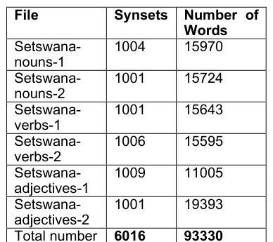

RAIL 2024Original text
Developing Bilingual English-Setswana Datasets for Space Domain
This is the original text of the paper. Translations are linked above.
Proceedings of the Fifth Workshop on Resources for African Indigenous Languages @ LREC-COLING 2024.
Original text, shown under its licence (CC BY-NC 4.0). Reuse allowed with attribution, non-commercial only. The translations on this site are by Ernst van Gassen (Arktos AI Lab).
Plain text for reuse, with its licence: English · LICENSE
Affiliations
Tebatso G. Moape1, Sunday O. Ojo2, Oludayo O. Olugbara3
University of South Africa1, Durban University of Technology2,3
28 Pioneer Ave, Florida Park, 1704, South Africa1
43 M L Sultan Rd, Greyville, Durban, 4001, South Africa2,3
E-mail addresses removed for privacy. They are in the original PDF.
Abstract
In the current digital age, languages lacking digital presence face an imminent risk of extinction. In addition, the absence of digital resources poses a significant obstacle to the development of Natural Language Processing (NLP) applications for such languages. Therefore, the development of digital language resources contributes to the preservation of these languages and enables application development. This paper contributes to the ongoing efforts of developing language resources for South African languages with a specific focus on Setswana and presents a new English-Setswana bilingual dataset that focuses on the space domain. The dataset was constructed using the expansion method. A subset of space domain English synsets from Princeton WordNet was professionally translated to Setswana. The initial submission of translations demonstrated an accuracy rate of 99% before validation. After validation, continuous revisions and discussions between translators and validators resulted in a unanimous agreement, ultimately achieving a 100% accuracy rate. The final version of the resource was converted into an XML format due to its machine-readable framework, providing a structured hierarchy for the organization of linguistic data.
Keywords
Digital language resources, Setswana bilingual dataset, Space domain translation
1. Introduction
The Princeton Wordnet (PWN) is an English lexical database formally introduced by Miller (1995) and developed at Princeton University. It has served as the primary lexical semantic resource for numerous researchers in the field of Natural Language Processing (NLP) and computational linguistics (Batsuren et al., 2019). The presence of this resource has facilitated the development of various NLP applications such as machine translation, information retrieval, and tools for word sense disambiguation. Additionally, the availability of PWN has provided researchers with the capability to evaluate and compare the effectiveness of various language models and applications.
However, languages such as Setswana face a scarcity of resources (Sebolela, 2009, Marivate et al., 2020), resulting in limited availability of linguistic tools and applications. Furthermore, the current tools are frequently created within isolated projects, each with curated data tailored to its particular scope. This fragmentation poses a challenge for researchers in effectively collaborating and comparing their work.
Apart from unannotated parallel-aligned corpora and word list dictionaries extracted from government websites, the only available resource comparable to the PWN is the African Wordnet (AWN). The AWN project was initiated with the aim of promoting multilingualism and facilitating the development of language tools and resources for South African (SA) languages (Bosch and Griesel, 2017). Currently, wordnets have been developed for Setswana, isiXhosa, isiZulu, Sesotho sa Leboa, and Tshivenda. The AWN holds significance due to the scarcity of data in South African languages. This makes the AFW a crucial resource.
In an effort to contribute to the development of resources for SA languages in general and Setswana in particular, this paper presents a Setswana lexicon. The lexicon was developed by translating a subset of the PWN through expert translation, expansion, and domain adaptation methods. The chosen domain for the translation focused on space-related concepts. The outcome of this project is a Setswana lexicon comprising of 6016 synsets, with lemmas, glosses, and usage examples. The use of expert-driven translation was to ensure the generation of high-quality translations, and the decision to focus on a specific domain was made to enable the Setswana lexicon's relevance and applicability in the targeted context.
The rest of the paper is structured as follows: section 2 presents relevant literature related to the development of semantic resources across languages and the state of the art of the available language resources for Setswana. Section 3 outlines the techniques and methodologies used for the resource development. Resource evaluation and results are presented in section 4. Section 5 concludes the paper.
2. Related Works
This section is divided into two subsections. The first sub-section focuses on relevant literature related to the development of semantic resources across languages. This literature provides a foundation and context for the methodology employed in developing the resource presented in this paper. The second sub-section provides a high-level overview of available resources for Setswana.
2.1 Development of Language Resources
Monolingual lexicons are constructed using two methods, namely, the expansion method and the merge method (Bosch and Griesel, 2018). In the expansion method, developers translate a subset of English synsets from PWN. The merge method involves the creation of synsets for the target languages, which are then merged with PWN synsets. The key distinction between the two methods is that the expansion method results in the target language inheriting PWN's semantic structure, while the merge method entails the creation of a new semantic structure for the target language, which is subsequently merged with PWN's semantic network. Resources conducted using these methods include (Batsuren et al., 2019, Bella et al., 2020).
In focusing on the space domain, this study used the expansion method for Setswana. The rationale behind this choice stems from the existence of similar field concepts within both English and Setswana space domains. To ensure that all the Setswana space concepts were included, concepts present in Setswana but absent from the translated set were added to the dataset and subsequently lexicalized into English. This guarantees a comprehensive coverage of space-related concepts in Setswana.
2.2 State of the Art on Setswana Resources
The importance of the availability of language resources cannot be overstated, as they play a crucial role in the preservation of languages and serve as an enabler for the advancement and development of NLP tools. In efforts to create, consolidate, and disseminate language resources for diverse SA languages, the South African Centre for Digital Language Resources (SADiLaR), in collaboration with various universities was established for this purpose. Supported by the Department of Science and Innovation (DSI), SADiLaR plays a significant role in facilitating the centralization of these language resources, contributing to their accessibility and use. This section outlines the text resources accessible for Setswana on SADiLaR, providing an overview of the presently available resources accessible to researchers.
In summary, currently, including the AFW (Bosch and Griesel, 2017), there is a total of 24 various types of text corpora. This includes multilingual word and phrase translations, phrase chunk annotated corpus, monolingual corpora, test suite, data treebank, named entity annotated corpus, annotated text corpora, and English-Setswana parallel corpora (Lastrucci et al., 2023, McKellar and Puttkammer, 2020). There is also domain-based data where English data from specific domains were translated into multiple SA languages, including Setswana. This encompasses data from domains such as soccer, mathematics, technology, health, natural sciences, arts and culture, government, elections, and parliamentary proceedings. The dataset presented in this paper specifically falls within the space domain, further expanding the scope of available data resources for the Setswana language.
3. Methodology
This paper adopted the expert-sourced expand approach to develop the presented resource. A subset of words, glosses, and examples from the PWN were translated and validated by Setswana language experts. The methodology consists of four phases, namely, translation data generation, translation, reformatting, and validation. The translations were conducted on a Microsoft Excel Spreadsheet. The following sub-sections expand on the structure of the spreadsheet, data generation, translation, validation, and reformatting phases.
3.1 Translation via Microsoft Excel Spreadsheets
The Microsoft Excel Spreadsheet contains source and target lemmas, synsets, glosses, and examples. These are defined as:
3.1.1 Lemma
A lemma is the canonical form (dictionary form, citation form) of a set of words (word forms). For example, tsamaya (go) is the lemma of the words tsamaya (go), wa tsamaya(goes), and o tsamaile (went).
3.1.2 Synsets
A synset is a set of synonyms that represent a single concept or idea in linguistics which consists of lemmas. Each synset represents a unique concept, and words within the same synset are considered synonymous with one another. Synsets provide a way to organize and understand the relationships between words and their meanings in a structured format.
3.1.3 Gloss
A text or sentence that describes the concept, i.e., a lemma.
3.1.4 Example
A text or sentence(s) that clarify the exact meaning of the described concept. Examples are also used to clarify and demonstrate how the lemma/concept is used in a sentence.
3.2 Translation Data Generation
For the translation data generation phase, a domain-specific adaptation method was used.
This method focuses on the creation of language resources based on a specific domain or subject area. The following criteria were used when selecting the subset of English synsets to be translated.
3.2.1 Domain Identification
The space domain dataset was selected.
3.2.2 Data Extraction
Lemmas, glosses, and examples were extracted and transferred to an Excel file.
Wordnet data is normally divided into four parts of speech categories, nouns, verbs, adjectives, and adverbs. To narrow the focus, this study focused on data in these four categories that are in the space domain.
3.3 Translation
The translations were conducted on a Microsoft Excel file. The Excel sheet contains a number of synsets in the source language to be translated into the target language. In this case, English was the source language, and Setswana was the target language. The file is organized in a pair-wise format (source language column - target language column). The translator fields consist of the following:
3.3.1 Synset lemmas columns
Column C: Contains a comma-separated list of lemmas of the source language.
Column D: The translator provides a comma-separated list of the synset lemmas of the target language.
3.3.2 Synset gloss columns
Column F: Contains the synset gloss in the source language.
Column G: The translator provides the synset gloss in the target language.
3.3.3 Synset examples columns
Column I: Contains the synset examples in the source language.
Column J: The translator provides the synset examples in the target language.
3.3.4 Translator notes columns
Column L: The translator can provide notes related to the synset translation if there are any.
3.4 Validation
The same Excel sheet used for translation was used for validation. The validator fields consist of the following:
3.4.1 Synset lemmas validation
The validator provides his validation on the lemmas in the target language in column E. The validator can choose between:
- Accepted: If the validator finds that the lemmas are complete and do not contain any errors such as spelling errors, she/he writes A (for accepted).
- Rejected: If the validator finds that the lemmas are not correct, or there are missing lemmas, or lemmas that do not belong to the synset, she/he writes R (for rejected) and provides justification for the decision in the validator notes column.
3.4.2 Synset gloss validation
The validator provides his validation on the synset gloss column H. The validator can choose between :
- Accepted: If the validator finds that the synset gloss describes the synset correctly and does not contain errors such as spell errors, she/he writes A.
- Rejected: If the validator finds that the synset gloss does not describe the synset or it contains errors, she/he writes R and provides justification.
3.4.3 Synset examples validation
The validator provides his decision on the synset examples in Column K. The validator can choose between:
- Accepted: If the validator finds that the synset examples are correct and they do not contain errors, and if there are no synset examples that may be necessary to describe how to use the lemmas, she/he writes here A. It is possible to accept synsets without examples if the translator did not provide them and the validator accepts the translator decision.
- Rejected: If the validator did not provide examples and the validator does not accept the translator's decision, or if he finds errors in the examples, she/he writes here R and provides justification.
3.4.4 Validator notes validation
The validator provides justification for his rejection of any of the previous synset translations in this column. Validator comments are optional in case of acceptance, but they are mandatory in case of rejection.
In cases where translations were rejected by the validator, the Excel sheet was returned back to the translator with the validator's notes for clarification. The identified mistakes were corrected, or the translators provided reasons for the chosen translations. This process continued until the translators and validators reached an agreement, and all translations were accepted, making this a high-quality resource.
3.5 Reformatting
The developed resource can be used for the development of NLP applications. However, data in an Excel format is not suitable for programming Integrated Development Environments (IDEs) and computational linguistics fields where these applications are developed (Suárez et al., 2007). This is due to its memory-intensive nature which results in inefficiency. The use of such data in IDEs could lead to increased memory consumption, longer execution time, and reduced performance, making it less than ideal for application development.
To address these limitations, the developed resource was reformatted to Extensible Markup Language (XML) format. XML format is a widely accepted standard for representing structured data (Bourret, 1999). Its standardization ensures consistency and compatibility across different development software applications and platforms. Furthermore, XML provides a machine-readable framework that allows the representation of linguistic data in a hierarchical order and the inclusion of metadata and semantic annotations (Kroeze et al., 2010). The data was grouped according to the parts of speech and converted to XML files.
4. Evaluation and Results
Our validation method explicitly and formally evaluated individual lemma, examples and definitions translations, and their quality. The evaluation was carried out by a group of native Setswana speakers who are proficient in English. They determined the validity of translations by marking them as "accept" if accurate and "reject" if incorrect or lacking in translation equivalents. To calculate the accuracy of the translations, the following metric was used to measure accuracy (A). This is calculated by dividing the number of correct translations i.e. "accept" by the number of total translations using the following equation:
A= (correct translations)/(total number of translations) * 100 A= 5981/6016 A=0.99
There were 5981 synsets correctly translated out of a total of 6016 translated synsets, thus substituting these values into the equation above. The initial submission achieved a 99% accuracy rate before undergoing validation. After validation, continuous revisions and discussions between translators and validators resulted in a unanimous agreement, ultimately achieving a 100% accuracy rate. The presented resource in this study consists of the following translated lexicon in Table 1.

Table 1: Translated lexicon statistics.
The number of the lemmas, glosses, and examples are the same for both Setswana and English as all the source data in all rows of all the files were translated.
5. Conclusion
5.1 Bibliographical References
This paper presented a new English-Setswana bilingual dataset that was professionally translated with a specific focus on the space domain. The dataset was developed using the expansion approach, involving the translation of a subset of synsets from PWN into Setswana. The translation process was undertaken by professional Setswana translators specifically contracted for this task. Following the translation process, native Setswana speakers, who also possessed proficiency in English, validated the translated content.
For validation, iterative assessments and discussions between translators and validators confirmed the accuracy of all translations, achieving a 100% accuracy rate. The current funding covered the translation of specified files presented in this paper within this domain, there are still pending files to be translated. Our future endeavours entail securing further funding to significantly enhance the dataset. Additionally, as the current translation process was manual, we aim to semi-automate both translation and validation procedures by leveraging computer-aided translation software. Once completed, the dataset will be openly accessible to researchers for application in linguistic and NLP research.
6. Bibliographical References
Batsuren, K., Ganbold, A., Chagnaa, A. & Giunchiglia, F. Building the mongolian wordnet. Proceedings of the 10th global WordNet conference, 2019. 238-244.
Bella, G., Mcneill, F., Gorman, R., Donnaíle, C. Ó., Macdonald, K., Chandrashekar, Y., Freihat, A. A. & Giunchiglia, F. A major wordnet for a minority language: Scottish gaelic. 12th Language Resources and Evaluation Conference, 2020. European Language Resources Association (ELRA), 2812-2818.
Bosch, S. & Griesel, M. African Wordnet: facilitating language learning in African languages. Proceedings of the 9th Global Wordnet Conference, 2018. 306-313.
Bosch, S. E. & Griesel, M. 2017. Strategies for building wordnets for under-resourced languages: The case of African languages. Literator (Potchefstroom. Online), 38, 1-12.
Bourret, R. 1999. Xml And Databases.
Kroeze, J. H., Bothma, T. J. D. & Matthee, M. C. 2010. Constructing An Xml Database Of Linguistics Data. Td: The Journal For Transdisciplinary Research In Southern Africa, 6,139-174.
Lastrucci, R., Dzingirai, I., Rajab, J., Madodonga, A., Shingange, M., Njini, D. & Marivate, V. 2023. Preparing The Vuk'uzenzele And Za-GovMultilingual South African Multilingual Corpora. Arxiv Preprint Arxiv:2303.03750.
Marivate, V., Sefara, T., Chabalala, V., Makhaya, K., Mokgonyane, T., Mokoena, R. & Modupe, A. 2020. Low Resource Language Dataset Creation, Curation And Classification: Setswana And Sepedi. Arxiv Preprint Arxiv:2004.13842.
Mckellar, C. A. & Puttkammer, M. J. 2020. Dataset For Comparable Evaluation Of Machine Translation Between 11 South African Languages. Data In Brief, 29, 105146.
Miller, G. A. 1995. Wordnet: A Lexical Database For English. Communications Of The Acm, 38, 39-41.
Sebolela, F. 2009. The Compilation Of CorpusBased Setswana Dictionaries. University Of Pretoria.
Suárez, O. S., Riudavets, F. J. C., Figueroa, Z. H. & Cabrera, A. C. G. 2007. Integration Of An Xml Electronic Dictionary With Linguistic Tools For Natural Language Processing. Information Processing & Management, 43,946-957.
Superman, S., Batman, B., Catwoman, C., and Spiderman, S. (2000). Superheroes experiences with books. The Phantom Editors Associates, Gotham City, 20th edition.
7. Language Resource References
Bosch, Sonja and Griesel, Marissa. 2017. Strategies for building wordnets for under-resourced languages: the case of African languages
Developing Bilingual English-Setswana Datasets for Space Domain
Développer des ensembles de données bilingues anglais-setswana pour le domaine spatial
Affiliations
Tebatso G. Moape1, Sunday O. Ojo2, Oludayo O. Olugbara3
University of South Africa1, Durban University of Technology2,3
28 Pioneer Ave, Florida Park, 1704, South Africa1,
43 M L Sultan Rd, Greyville, Durban, 4001, South Africa2,3
, ,
Affiliations
Tebatso G. Moape1, Sunday O. Ojo2, Oludayo O. Olugbara3
University of South Africa1, Durban University of Technology2,3
28 Pioneer Ave, Florida Park, 1704, South Africa1,
43 M L Sultan Rd, Greyville, Durban, 4001, South Africa2,3
, ,
Abstract
Résumé
In the current digital age, languages lacking digital presence face an imminent risk of extinction. In addition, the absence of digital resources poses a significant obstacle to the development of Natural Language Processing (NLP) applications for such languages. Therefore, the development of digital language resources contributes to the preservation of these languages and enables application development. This paper contributes to the ongoing efforts of developing language resources for South African languages with a specific focus on Setswana and presents a new English-Setswana bilingual dataset that focuses on the space domain. The dataset was constructed using the expansion method. A subset of space domain English synsets from Princeton WordNet was professionally translated to Setswana. The initial submission of translations demonstrated an accuracy rate of 99% before validation. After validation, continuous revisions and discussions between translators and validators resulted in a unanimous agreement, ultimately achieving a 100% accuracy rate. The final version of the resource was converted into an XML format due to its machine-readable framework, providing a structured hierarchy for the organization of linguistic data.
À l’ère numérique actuelle, les langues dépourvues de présence numérique font face à un risque imminent d’extinction. En outre, l'absence de ressources numériques constitue un obstacle important au développement d'applications de traitement du langage naturel (NLP) pour ces langues. Par conséquent, le développement de ressources linguistiques numériques contribue à la préservation de ces langues et permet le développement d'applications. Cet article contribue aux efforts en cours de développement de ressources linguistiques pour les langues sud-africaines, avec un accent particulier sur le setswana, et présente un nouveau jeu de données bilingue anglais-setswana axé sur le domaine spatial. L'ensemble de données a été construit en utilisant la méthode d'expansion. Un sous-ensemble de synsets du domaine spatial en anglais de Princeton WordNet a été professionnellement traduit en Setswana. La soumission initiale des traductions a démontré un taux d'exactitude de 99 % avant la validation. Après validation, des révisions et discussions continues entre traducteurs et validateurs ont abouti à un accord unanime, atteignant finalement un taux de précision de 100 %. La version finale de la ressource a été convertie en un format XML en raison de son cadre lisible par machine, fournissant une hiérarchie structurée pour l'organisation des données linguistiques.
Keywords
Mots-clés
Digital language resources, Setswana bilingual dataset, Space domain translation
Ressources linguistiques numériques, Jeu de données bilingue Setswana, Traduction de domaine spatial
1. Introduction
1. Introduction
The Princeton Wordnet (PWN) is an English lexical database formally introduced by Miller (1995) and developed at Princeton University. It has served as the primary lexical semantic resource for numerous researchers in the field of Natural Language Processing (NLP) and computational linguistics (Batsuren et al., 2019). The presence of this resource has facilitated the development of various NLP applications such as machine translation, information retrieval, and tools for word sense disambiguation. Additionally, the availability of PWN has provided researchers with the capability to evaluate and compare the effectiveness of various language models and applications.
Le Princeton Wordnet (PWN) est une base de données lexicale en anglais formellement introduite par Miller (1995) et développée à l'Université de Princeton. Il a servi de ressource sémantique lexicale primaire pour de nombreux chercheurs dans le domaine du traitement du langage naturel (NLP) et de la linguistique computationnelle (Batsuren et al., 2019). La présence de cette ressource a facilité le développement de diverses applications de TAL telles que la traduction automatique, la recherche d'information et les outils de désambiguïsation du sens des mots. De plus, la disponibilité du PWN a permis aux chercheurs d'évaluer et de comparer l'efficacité de divers modèles de langage et applications.
However, languages such as Setswana face a scarcity of resources (Sebolela, 2009, Marivate et al., 2020), resulting in limited availability of linguistic tools and applications. Furthermore, the current tools are frequently created within isolated projects, each with curated data tailored to its particular scope. This fragmentation poses a challenge for researchers in effectively collaborating and comparing their work.
Cependant, des langues comme le Setswana font face à une pénurie de ressources (Sebolela, 2009, Marivate et al., 2020), entraînant une disponibilité limitée d'outils et d'applications linguistiques. De plus, les outils actuels sont fréquemment créés dans des projets isolés, chacun avec des données curatées adaptées à leur portée particulière. Cette fragmentation pose un défi aux chercheurs qui doivent collaborer efficacement et comparer leurs travaux.
Apart from unannotated parallel-aligned corpora and word list dictionaries extracted from government websites, the only available resource comparable to the PWN is the African Wordnet (AWN). The AWN project was initiated with the aim of promoting multilingualism and facilitating the development of language tools and resources for South African (SA) languages (Bosch and Griesel, 2017). Currently, wordnets have been developed for Setswana, isiXhosa, isiZulu, Sesotho sa Leboa, and Tshivenda. The AWN holds significance due to the scarcity of data in South African languages. This makes the AFW a crucial resource.
En dehors des corpus parallèles non annotés et des dictionnaires de listes de mots extraits de sites web gouvernementaux, la seule ressource disponible comparable au PWN est l'African Wordnet (AWN). Le projet AWN a été initié dans le but de promouvoir le multilinguisme et de faciliter le développement d'outils et de ressources linguistiques pour les langues sud-africaines (SA) (Bosch et Griesel, 2017). Actuellement, des wordnets ont été développés pour le Setswana, l'isiXhosa, l'isiZulu, le Sesotho sa Leboa et le Tshivenda. L'AWN revêt une importance particulière en raison de la rareté des données dans les langues sud-africaines. Cela fait de l'AFW une ressource cruciale.
In an effort to contribute to the development of resources for SA languages in general and Setswana in particular, this paper presents a Setswana lexicon. The lexicon was developed by translating a subset of the PWN through expert translation, expansion, and domain adaptation methods. The chosen domain for the translation focused on space-related concepts. The outcome of this project is a Setswana lexicon comprising of 6016 synsets, with lemmas, glosses, and usage examples. The use of expert-driven translation was to ensure the generation of high-quality translations, and the decision to focus on a specific domain was made to enable the Setswana lexicon's relevance and applicability in the targeted context.
Dans le but de contribuer au développement de ressources pour les langues SA en général et le setswana en particulier, cet article présente un lexique setswana. Le lexique a été développé en traduisant un sous-ensemble du PWN par des méthodes expertes de traduction, d'expansion et d'adaptation de domaine. Le domaine choisi pour la traduction s'est concentré sur des concepts liés à l'espace. Le résultat de ce projet est un lexique Setswana comprenant 6016 synsets, avec des lemmas, des gloses et des exemples d'utilisation. L'utilisation de la traduction assistée par des experts visait à assurer la production de traductions de haute qualité, et la décision de se concentrer sur un domaine spécifique a été prise pour permettre la pertinence et l'applicabilité du lexique de Setswana dans le contexte ciblé.
The rest of the paper is structured as follows: section 2 presents relevant literature related to the development of semantic resources across languages and the state of the art of the available language resources for Setswana. Section 3 outlines the techniques and methodologies used for the resource development. Resource evaluation and results are presented in section 4. Section 5 concludes the paper.
Le reste du document est structuré comme suit: la section 2 présente la littérature pertinente liée au développement des ressources sémantiques à travers les langues et l'état de l'art des ressources linguistiques disponibles pour Setswana. La section 3 décrit les techniques et méthodologies utilisées pour le développement de la ressource. L'évaluation des ressources et les résultats sont présentés à la section 4. La section 5 conclut le document.
2. Related Works
2. Travaux connexes
This section is divided into two subsections. The first sub-section focuses on relevant literature related to the development of semantic resources across languages. This literature provides a foundation and context for the methodology employed in developing the resource presented in this paper. The second sub-section provides a high-level overview of available resources for Setswana.
Cette section est divisée en deux sous-sections. La première sous-section se concentre sur la littérature pertinente liée au développement des ressources sémantiques à travers les langues. Cette littérature fournit une base et un contexte pour la méthodologie employée dans le développement de la ressource présentée dans cet article. La deuxième sous-section fournit une vue d'ensemble à haut niveau des ressources disponibles pour le Setswana.
2.1 Development of Language Resources
2.1 Développement de ressources linguistiques
Monolingual lexicons are constructed using two methods, namely, the expansion method and the merge method (Bosch and Griesel, 2018). In the expansion method, developers translate a subset of English synsets from PWN. The merge method involves the creation of synsets for the target languages, which are then merged with PWN synsets. The key distinction between the two methods is that the expansion method results in the target language inheriting PWN's semantic structure, while the merge method entails the creation of a new semantic structure for the target language, which is subsequently merged with PWN's semantic network. Resources conducted using these methods include (Batsuren et al., 2019, Bella et al., 2020).
Les lexiques monolingues sont construits en utilisant deux méthodes, à savoir, la méthode d'expansion et la méthode de fusion (Bosch et Griesel, 2018). Dans la méthode d'expansion, les développeurs traduisent un sous-ensemble de synsets anglais à partir de PWN. La méthode de fusion implique la création de synsets pour les langues cibles, qui sont ensuite fusionnés avec les synsets de PWN. La principale distinction entre les deux méthodes est que la méthode d'expansion aboutit à ce que la langue cible hérite de la structure sémantique de PWN, tandis que la méthode de fusion implique la création d'une nouvelle structure sémantique pour la langue cible, qui est ensuite fusionnée avec le réseau sémantique de PWN. Les ressources réalisées en utilisant ces méthodes incluent (Batsuren et al., 2019, Bella et al., 2020).
In focusing on the space domain, this study used the expansion method for Setswana. The rationale behind this choice stems from the existence of similar field concepts within both English and Setswana space domains. To ensure that all the Setswana space concepts were included, concepts present in Setswana but absent from the translated set were added to the dataset and subsequently lexicalized into English. This guarantees a comprehensive coverage of space-related concepts in Setswana.
En se concentrant sur le domaine spatial, cette étude a utilisé la méthode d'expansion pour le Setswana. La raison de ce choix découle de l'existence de concepts de domaine similaires à la fois dans les domaines spatiaux anglais et setswana. Pour s'assurer que tous les concepts spatiaux setswana étaient inclus, les concepts présents en setswana mais absents de l'ensemble traduit ont été ajoutés au jeu de données et ensuite lexicalisés en anglais. Cela garantit une couverture complète des concepts liés à l'espace en setswana.
2.2 State of the Art on Setswana Resources
2.2 État des connaissances sur les ressources en setswana
The importance of the availability of language resources cannot be overstated, as they play a crucial role in the preservation of languages and serve as an enabler for the advancement and development of NLP tools. In efforts to create, consolidate, and disseminate language resources for diverse SA languages, the South African Centre for Digital Language Resources (SADiLaR), in collaboration with various universities was established for this purpose. Supported by the Department of Science and Innovation (DSI), SADiLaR plays a significant role in facilitating the centralization of these language resources, contributing to their accessibility and use. This section outlines the text resources accessible for Setswana on SADiLaR, providing an overview of the presently available resources accessible to researchers.
L'importance de la disponibilité des ressources linguistiques ne saurait être surestimée, car elles jouent un rôle crucial dans la préservation des langues et servent de catalyseur pour l'avancement et le développement des outils de TAL. Dans le but de créer, de consolider et de diffuser des ressources linguistiques pour diverses langues SA, le South African Centre for Digital Language Resources (SADiLaR), en collaboration avec diverses universités, a été créé à cette fin. Soutenu par le Department of Science and Innovation (DSI), le SADiLaR joue un rôle significatif dans la facilitation de la centralisation de ces ressources linguistiques, contribuant à leur accessibilité et à leur utilisation. Cette section décrit les ressources textuelles accessibles pour le setswana sur SADiLaR, fournissant un aperçu des ressources actuellement disponibles accessibles aux chercheurs.
In summary, currently, including the AFW (Bosch and Griesel, 2017), there is a total of 24 various types of text corpora. This includes multilingual word and phrase translations, phrase chunk annotated corpus, monolingual corpora, test suite, data treebank, named entity annotated corpus, annotated text corpora, and English-Setswana parallel corpora (Lastrucci et al., 2023, McKellar and Puttkammer, 2020). There is also domain-based data where English data from specific domains were translated into multiple SA languages, including Setswana. This encompasses data from domains such as soccer, mathematics, technology, health, natural sciences, arts and culture, government, elections, and parliamentary proceedings. The dataset presented in this paper specifically falls within the space domain, further expanding the scope of available data resources for the Setswana language.
En résumé, actuellement, y compris l'AFW (Bosch et Griesel, 2017), il existe un total de 24 types différents de corpus textuels. Cela inclut des traductions multilingues de mots et de phrases, un corpus annoté en segments de phrases, des corpus monolingues, une suite de tests, un corpus arboré, un corpus annoté en entités nommées, des corpus de textes annotés, et des corpus parallèles anglais-setswana (Lastrucci et al., 2023, McKellar et Puttkammer, 2020). Il existe également des données basées sur des domaines où les données en anglais de domaines spécifiques ont été traduites dans plusieurs langues SA, y compris Setswana. Cela englobe des données provenant de domaines tels que le football, les mathématiques, la technologie, la santé, les sciences naturelles, les arts et la culture, le gouvernement, les élections et les procédures parlementaires. L'ensemble de données présenté dans ce document relève spécifiquement du domaine spatial, élargissant encore la portée des ressources de données disponibles pour la langue setswana.
3. Methodology
3. Méthodologie
This paper adopted the expert-sourced expand approach to develop the presented resource. A subset of words, glosses, and examples from the PWN were translated and validated by Setswana language experts. The methodology consists of four phases, namely, translation data generation, translation, reformatting, and validation. The translations were conducted on a Microsoft Excel Spreadsheet. The following sub-sections expand on the structure of the spreadsheet, data generation, translation, validation, and reformatting phases.
Cet article a adopté l'approche d'expansion fondée sur des experts pour développer la ressource présentée. Un sous-ensemble de mots, de gloses et d’exemples tirés du PWN ont été traduits et validés par des experts linguistiques de Setswana. La méthodologie comprend quatre phases, à savoir la génération de données de traduction, la traduction, le reformatage et la validation. Les traductions ont été réalisées sur une feuille de calcul Microsoft Excel. Les sous-sections suivantes développent la structure de la feuille de calcul, la génération de données, la traduction, la validation et les phases de reformatage.
3.1 Translation via Microsoft Excel Spreadsheets
3.1 Traduction via des feuilles de calcul Microsoft Excel
The Microsoft Excel Spreadsheet contains source and target lemmas, synsets, glosses, and examples. These are defined as:
La feuille de calcul Microsoft Excel contient les lemmes source et cible, les synsets, les gloses et les exemples. Ceux-ci sont définis comme :
3.1.1 Lemma
3.1.1 Lemme
A lemma is the canonical form (dictionary form, citation form) of a set of words (word forms). For example, tsamaya (go) is the lemma of the words tsamaya (go), wa tsamaya(goes), and o tsamaile (went).
Un lemme est la forme canonique (forme de dictionnaire, forme de citation) d'un ensemble de mots (formes de mots). Par exemple, tsamaya (aller) est le lemme des mots tsamaya (aller), wa tsamaya (va), et o tsamaile (est allé).
3.1.2 Synsets
3.1.2 Synsets
A synset is a set of synonyms that represent a single concept or idea in linguistics which consists of lemmas. Each synset represents a unique concept, and words within the same synset are considered synonymous with one another. Synsets provide a way to organize and understand the relationships between words and their meanings in a structured format.
Un synset est un ensemble de synonymes qui représentent un seul concept ou idée en linguistique et qui est constitué de lemmes. Chaque synset représente un concept unique, et les mots au sein du même synset sont considérés comme synonymes les uns des autres. Les synsets fournissent un moyen d'organiser et de comprendre les relations entre les mots et leurs significations dans un format structuré.
3.1.3 Gloss
3.1.3 Glose
A text or sentence that describes the concept, i.e., a lemma.
Un texte ou une phrase qui décrit le concept, c'est-à-dire un lemme.
3.1.4 Example
3.1.4 Exemple
A text or sentence(s) that clarify the exact meaning of the described concept. Examples are also used to clarify and demonstrate how the lemma/concept is used in a sentence.
Un texte ou une phrase(s) qui clarifie(nt) le sens exact du concept décrit. Des exemples sont également utilisés pour clarifier et démontrer comment le lemme / concept est utilisé dans une phrase.
3.2 Translation Data Generation
3.2 Génération de données de traduction
For the translation data generation phase, a domain-specific adaptation method was used.
Pour la phase de génération des données de traduction, une méthode d'adaptation spécifique au domaine a été utilisée.
This method focuses on the creation of language resources based on a specific domain or subject area. The following criteria were used when selecting the subset of English synsets to be translated.
Cette méthode se concentre sur la création de ressources linguistiques basées sur un domaine ou un sujet spécifique. Les critères suivants ont été utilisés lors de la sélection du sous-ensemble de synsets anglais à traduire.
3.2.1 Domain Identification
3.2.1 Identification de domaine
The space domain dataset was selected.
L'ensemble de données du domaine spatial a été sélectionné.
3.2.2 Data Extraction
3.2.2 Extraction des données
Lemmas, glosses, and examples were extracted and transferred to an Excel file.
Les lemmes, les glosses et les exemples ont été extraits et transférés dans un fichier Excel.
Wordnet data is normally divided into four parts of speech categories, nouns, verbs, adjectives, and adverbs. To narrow the focus, this study focused on data in these four categories that are in the space domain.
Les données de WordNet sont normalement divisées en quatre catégories de parties du discours : les noms, les verbes, les adjectifs et les adverbes. Pour restreindre le champ d'étude, cette étude s'est concentrée sur les données de ces quatre catégories qui sont dans le domaine spatial.
3.3 Translation
3.3 Traduction
The translations were conducted on a Microsoft Excel file. The Excel sheet contains a number of synsets in the source language to be translated into the target language. In this case, English was the source language, and Setswana was the target language. The file is organized in a pair-wise format (source language column - target language column). The translator fields consist of the following:
Les traductions ont été réalisées sur un fichier Microsoft Excel. La feuille Excel contient un certain nombre de synsets dans la langue source à traduire dans la langue cible. Dans ce cas, l'anglais était la langue source, et le setswana était la langue cible. Le fichier est organisé dans un format par paires (colonne de la langue source - colonne de la langue cible). Les champs de traducteur se composent de ce qui suit:
3.3.1 Synset lemmas columns
3.3.1 Colonnes de lemme Synset
Column C: Contains a comma-separated list of lemmas of the source language.
Colonne C : Contient une liste de lemma de la langue source, séparés par des virgules.
Column D: The translator provides a comma-separated list of the synset lemmas of the target language.
Colonne D : Le traducteur fournit une liste, séparée par des virgules, des lemmes du synset de la langue cible.
3.3.2 Synset gloss columns
3.3.2 Colonnes de glose du synset
Column F: Contains the synset gloss in the source language.
Colonne F: Contient le synset gloss dans la langue source.
Column G: The translator provides the synset gloss in the target language.
Colonne G : Le traducteur fournit la glose du synset dans la langue cible.
3.3.3 Synset examples columns
3.3.3 Colonnes d'exemples de synsets
Column I: Contains the synset examples in the source language.
Colonne I : Contient les exemples du synset dans la langue source.
Column J: The translator provides the synset examples in the target language.
Colonne J : Le traducteur fournit les exemples de synset dans la langue cible.
3.3.4 Translator notes columns
3.3.4 Colonnes de notes du traducteur
Column L: The translator can provide notes related to the synset translation if there are any.
Colonne L : Le traducteur peut fournir des notes relatives à la traduction du synset s'il y en a.
3.4 Validation
3.4 Validation
The same Excel sheet used for translation was used for validation. The validator fields consist of the following:
La même feuille Excel utilisée pour la traduction a été utilisée pour la validation. Les champs du validateur se composent de ce qui suit :
3.4.1 Synset lemmas validation
3.4.1 Validation des lemme de Synset
The validator provides his validation on the lemmas in the target language in column E. The validator can choose between:
Le validateur fournit sa validation sur les lemma dans la langue cible dans la colonne E. Le validateur peut choisir entre:
Accepted: If the validator finds that the lemmas are complete and do not contain any errors such as spelling errors, she/he writes A (for accepted).
Accepté : Si le validateur constate que les lemmes sont complets et ne contiennent pas d'erreurs telles que des fautes d'orthographe, il/elle écrit A (pour accepté).
Rejected: If the validator finds that the lemmas are not correct, or there are missing lemmas, or lemmas that do not belong to the synset, she/he writes R (for rejected) and provides justification for the decision in the validator notes column.
Rejeté : Si le validateur constate que les lemmes ne sont pas corrects, ou qu'il manque des lemmes, ou que des lemmes n'appartiennent pas au synset, il/elle écrit R (pour rejeté) et fournit une justification de la décision dans la colonne des notes du validateur.
3.4.2 Synset gloss validation
3.4.2 Validation des définitions de synsets
The validator provides his validation on the synset gloss column H. The validator can choose between :
Le validateur fournit sa validation sur la colonne synset gloss H. Le validateur peut choisir entre :
Accepted: If the validator finds that the synset gloss describes the synset correctly and does not contain errors such as spell errors, she/he writes A.
Accepté : Si le validateur trouve que la glose du synset décrit correctement le synset et ne contient pas d'erreurs telles que des fautes d'orthographe, il/elle écrit A.
Rejected: If the validator finds that the synset gloss does not describe the synset or it contains errors, she/he writes R and provides justification.
Rejeté : Si le validateur constate que la définition du synset ne décrit pas le synset ou qu'elle contient des erreurs, il/elle écrit R et fournit une justification.
3.4.3 Synset examples validation
3.4.3 Validation des exemples de Synset
The validator provides his decision on the synset examples in Column K. The validator can choose between:
Le validateur donne sa décision sur les exemples de synsets dans la colonne K. Le validateur peut choisir entre :
Accepted: If the validator finds that the synset examples are correct and they do not contain errors, and if there are no synset examples that may be necessary to describe how to use the lemmas, she/he writes here A. It is possible to accept synsets without examples if the translator did not provide them and the validator accepts the translator decision.
Accepté: Si le validateur trouve que les exemples de synset sont corrects et qu'ils ne contiennent pas d'erreurs, et s'il n'y a pas d'exemples de synset qui peuvent être nécessaires pour décrire comment utiliser les lemmes, il écrit ici A. Il est possible d'accepter des synsets sans exemples si le traducteur ne les a pas fournis et que le validateur accepte la décision du traducteur.
Rejected: If the validator did not provide examples and the validator does not accept the translator's decision, or if he finds errors in the examples, she/he writes here R and provides justification.
Rejeté : Si le validateur n'a pas fourni d'exemples et que le validateur n'accepte pas la décision du traducteur, ou s'il trouve des erreurs dans les exemples, il/elle écrit ici R et fournit une justification.
3.4.4 Validator notes validation
3.4.4 Validation des notes du validateur
The validator provides justification for his rejection of any of the previous synset translations in this column. Validator comments are optional in case of acceptance, but they are mandatory in case of rejection.
Le validateur fournit une justification pour son rejet de l'une des traductions de synset précédentes dans cette colonne. Les commentaires du validateur sont facultatifs en cas d'acceptation, mais ils sont obligatoires en cas de rejet.
In cases where translations were rejected by the validator, the Excel sheet was returned back to the translator with the validator's notes for clarification. The identified mistakes were corrected, or the translators provided reasons for the chosen translations. This process continued until the translators and validators reached an agreement, and all translations were accepted, making this a high-quality resource.
Dans les cas où les traductions ont été rejetées par le validateur, la feuille Excel a été retournée au traducteur avec les notes du validateur pour clarification. Les erreurs identifiées étaient corrigées, ou les traducteurs fournissaient des raisons pour les traductions choisies. Ce processus s'est poursuivi jusqu'à ce que les traducteurs et les validateurs parviennent à un accord, et que toutes les traductions soient acceptées, faisant de ce dernier une ressource de haute qualité.
3.5 Reformatting
3.5 Reformatage
The developed resource can be used for the development of NLP applications. However, data in an Excel format is not suitable for programming Integrated Development Environments (IDEs) and computational linguistics fields where these applications are developed (Suárez et al., 2007). This is due to its memory-intensive nature which results in inefficiency. The use of such data in IDEs could lead to increased memory consumption, longer execution time, and reduced performance, making it less than ideal for application development.
La ressource développée peut être utilisée pour le développement d'applications de traitement automatique du langage naturel (TALN). Cependant, les données en format Excel ne sont pas adaptées à la programmation des environnements de développement intégrés (EDI) et aux domaines de la linguistique computationnelle où ces applications sont développées (Suárez et al., 2007). Cela est dû à sa nature de mémoire intensive qui se traduit par l'inefficacité. L'utilisation de ces données dans les IDE pourrait entraîner une augmentation de la consommation de mémoire, un temps d'exécution plus long et une réduction des performances, ce qui en fait un outil loin d'être idéal pour le développement d'applications.
To address these limitations, the developed resource was reformatted to Extensible Markup Language (XML) format. XML format is a widely accepted standard for representing structured data (Bourret, 1999). Its standardization ensures consistency and compatibility across different development software applications and platforms. Furthermore, XML provides a machine-readable framework that allows the representation of linguistic data in a hierarchical order and the inclusion of metadata and semantic annotations (Kroeze et al., 2010). The data was grouped according to the parts of speech and converted to XML files.
Pour répondre à ces limitations, la ressource développée a été reformatée au format XML (Extensible Markup Language). Le format XML est une norme largement acceptée pour représenter des données structurées (Bourret, 1999). Sa standardisation assure la cohérence et la compatibilité entre différentes applications et plateformes logicielles de développement. De plus, XML fournit un cadre lisible par machine qui permet la représentation des données linguistiques dans un ordre hiérarchique et l'inclusion de métadonnées et d'annotations sémantiques (Kroeze et al., 2010). Les données ont été regroupées selon les parties du discours et converties en fichiers XML.
4. Evaluation and Results
4. Évaluation et résultats
Our validation method explicitly and formally evaluated individual lemma, examples and definitions translations, and their quality. The evaluation was carried out by a group of native Setswana speakers who are proficient in English. They determined the validity of translations by marking them as "accept" if accurate and "reject" if incorrect or lacking in translation equivalents. To calculate the accuracy of the translations, the following metric was used to measure accuracy (A). This is calculated by dividing the number of correct translations i.e. "accept" by the number of total translations using the following equation:
Notre méthode de validation a évalué explicitement et formellement les traductions individuelles de lemmes, d'exemples et de définitions, ainsi que leur qualité. L'évaluation a été réalisée par un groupe de locuteurs natifs de Setswana qui maîtrisent l'anglais. Ils ont déterminé la validité des traductions en les marquant comme "accept" si elles étaient précises et "reject" si elles étaient incorrectes ou manquaient d'équivalents de traduction. Pour calculer la précision des traductions, la métrique suivante a été utilisée pour mesurer la précision (A). Cela se calcule en divisant le nombre de traductions correctes, c'est-à-dire "accept", par le nombre total de traductions en utilisant l'équation suivante :
A= (correct translations)/(total number of translations) * 100 A= 5981/6016 A=0.99
There were 5981 synsets correctly translated out of a total of 6016 translated synsets, thus substituting these values into the equation above. The initial submission achieved a 99% accuracy rate before undergoing validation. After validation, continuous revisions and discussions between translators and validators resulted in a unanimous agreement, ultimately achieving a 100% accuracy rate. The presented resource in this study consists of the following translated lexicon in Table 1.
Il y avait 5981 synsets correctement traduits sur un total de 6016 synsets traduits, substituant ainsi ces valeurs dans l'équation ci-dessus. La soumission initiale a atteint un taux d'exactitude de 99 % avant d'être soumise à la validation. Après validation, des révisions et discussions continues entre traducteurs et validateurs ont abouti à un accord unanime, atteignant finalement un taux de précision de 100 %. La ressource présentée dans cette étude consiste en le lexique traduit suivant dans le Tableau 1.
Table 1: Translated lexicon statistics.
Tableau 1: Statistiques du lexique traduit.
The number of the lemmas, glosses, and examples are the same for both Setswana and English as all the source data in all rows of all the files were translated.
Le nombre de lemmes, de gloses et d'exemples est le même pour le setswana et l'anglais, car toutes les données sources de toutes les lignes de tous les fichiers ont été traduites.
5. Conclusion
5. Conclusion
5.1 Bibliographical References
5.1 Références bibliographiques
This paper presented a new English-Setswana bilingual dataset that was professionally translated with a specific focus on the space domain. The dataset was developed using the expansion approach, involving the translation of a subset of synsets from PWN into Setswana. The translation process was undertaken by professional Setswana translators specifically contracted for this task. Following the translation process, native Setswana speakers, who also possessed proficiency in English, validated the translated content.
Cet article a présenté un nouvel ensemble de données bilingues anglais-setswana qui a été traduit professionnellement avec un accent particulier sur le domaine spatial. L'ensemble de données a été développé en utilisant l'approche d'expansion, impliquant la traduction d'un sous-ensemble de synsets de PWN en Setswana. Le processus de traduction a été entrepris par des traducteurs professionnels de Setswana spécialement engagés pour cette tâche. Suite au processus de traduction, des locuteurs natifs du setswana, qui possédaient également une maîtrise de l'anglais, ont validé le contenu traduit.
For validation, iterative assessments and discussions between translators and validators confirmed the accuracy of all translations, achieving a 100% accuracy rate. The current funding covered the translation of specified files presented in this paper within this domain, there are still pending files to be translated. Our future endeavours entail securing further funding to significantly enhance the dataset. Additionally, as the current translation process was manual, we aim to semi-automate both translation and validation procedures by leveraging computer-aided translation software. Once completed, the dataset will be openly accessible to researchers for application in linguistic and NLP research.
Pour la validation, les évaluations itératives et les discussions entre les traducteurs et les validateurs ont confirmé l'exactitude de toutes les traductions, atteignant un taux de précision de 100%. Le financement actuel a couvert la traduction des fichiers spécifiés présentés dans cet article dans ce domaine, il reste encore des fichiers en attente à traduire. Nos efforts futurs impliquent d'obtenir un financement supplémentaire pour améliorer considérablement l'ensemble de données. De plus, comme le processus de traduction actuel était manuel, nous visons à semi-automatiser les procédures de traduction et de validation en tirant parti des logiciels de traduction assistée par ordinateur. Une fois terminé, le jeu de données sera librement accessible aux chercheurs pour des applications dans la recherche linguistique et en TAL.
6. Bibliographical References
6. Références bibliographiques
Batsuren, K., Ganbold, A., Chagnaa, A. & Giunchiglia, F. Building the mongolian wordnet. Proceedings of the 10th global WordNet conference, 2019. 238-244.
Bella, G., Mcneill, F., Gorman, R., Donnaíle, C. Ó., Macdonald, K., Chandrashekar, Y., Freihat, A. A. & Giunchiglia, F. A major wordnet for a minority language: Scottish gaelic. 12th Language Resources and Evaluation Conference, 2020. European Language Resources Association (ELRA), 2812-2818.
Bosch, S. & Griesel, M. African Wordnet: facilitating language learning in African languages. Proceedings of the 9th Global Wordnet Conference, 2018. 306-313.
Bosch, S. E. & Griesel, M. 2017. Strategies for building wordnets for under-resourced languages: The case of African languages. Literator (Potchefstroom. Online), 38, 1-12.
Bourret, R. 1999. Xml And Databases.
Kroeze, J. H., Bothma, T. J. D. & Matthee, M. C. 2010. Constructing An Xml Database Of Linguistics Data. Td: The Journal For Transdisciplinary Research In Southern Africa, 6,139-174.
Lastrucci, R., Dzingirai, I., Rajab, J., Madodonga, A., Shingange, M., Njini, D. & Marivate, V. 2023. Preparing The Vuk'uzenzele And Za-GovMultilingual South African Multilingual Corpora. Arxiv Preprint Arxiv:2303.03750.
Marivate, V., Sefara, T., Chabalala, V., Makhaya, K., Mokgonyane, T., Mokoena, R. & Modupe, A. 2020. Low Resource Language Dataset Creation, Curation And Classification: Setswana And Sepedi. Arxiv Preprint Arxiv:2004.13842.
Mckellar, C. A. & Puttkammer, M. J. 2020. Dataset For Comparable Evaluation Of Machine Translation Between 11 South African Languages. Data In Brief, 29, 105146.
Miller, G. A. 1995. Wordnet: A Lexical Database For English. Communications Of The Acm, 38, 39-41.
Sebolela, F. 2009. The Compilation Of CorpusBased Setswana Dictionaries. University Of Pretoria.
Suárez, O. S., Riudavets, F. J. C., Figueroa, Z. H. & Cabrera, A. C. G. 2007. Integration Of An Xml Electronic Dictionary With Linguistic Tools For Natural Language Processing. Information Processing & Management, 43,946-957.
Superman, S., Batman, B., Catwoman, C., and Spiderman, S. (2000). Superheroes experiences with books. The Phantom Editors Associates, Gotham City, 20th edition.
7. Language Resource References
7. Références des ressources linguistiques
Bosch, Sonja and Griesel, Marissa. 2017. Strategies for building wordnets for under-resourced languages: the case of African languages
Developing Bilingual English-Setswana Datasets for Space Domain
Kutengeneza Seti za Data za Lugha Mbili za Kiingereza na Kisetswana kwa Ajili ya Kikoa cha Anga
Affiliations
Tebatso G. Moape1, Sunday O. Ojo2, Oludayo O. Olugbara3
University of South Africa1, Durban University of Technology2,3
28 Pioneer Ave, Florida Park, 1704, South Africa1,
43 M L Sultan Rd, Greyville, Durban, 4001, South Africa2,3
, ,
Taasisi
Tebatso G. Moape1, Sunday O. Ojo2, Oludayo O. Olugbara3
University of South Africa1, Durban University of Technology2,3
28 Pioneer Ave, Florida Park, 1704, South Africa1,
43 M L Sultan Rd, Greyville, Durban, 4001, South Africa2,3
, ,
Abstract
Muhtasari
In the current digital age, languages lacking digital presence face an imminent risk of extinction. In addition, the absence of digital resources poses a significant obstacle to the development of Natural Language Processing (NLP) applications for such languages. Therefore, the development of digital language resources contributes to the preservation of these languages and enables application development. This paper contributes to the ongoing efforts of developing language resources for South African languages with a specific focus on Setswana and presents a new English-Setswana bilingual dataset that focuses on the space domain. The dataset was constructed using the expansion method. A subset of space domain English synsets from Princeton WordNet was professionally translated to Setswana. The initial submission of translations demonstrated an accuracy rate of 99% before validation. After validation, continuous revisions and discussions between translators and validators resulted in a unanimous agreement, ultimately achieving a 100% accuracy rate. The final version of the resource was converted into an XML format due to its machine-readable framework, providing a structured hierarchy for the organization of linguistic data.
Katika enzi hii ya kidijitali, lugha zisizo na uwepo wa kidijitali zinakabiliwa na hatari ya karibu ya kutoweka. Aidha, ukosefu wa rasilimali za kidijitali unaleta kikwazo kikubwa kwa maendeleo ya programu za Uchakataji wa Lugha Asilia (NLP) kwa lugha hizo. Kwa hiyo, utengenezaji wa rasilimali za lugha za kidijitali unachangia katika uhifadhi wa lugha hizi na kuwezesha utengenezaji wa programu. Makala haya yanachangia katika juhudi zinazoendelea za kutengeneza rasilimali za lugha kwa Lugha za Afrika Kusini kwa kulenga hasa Kisetswana na yanawasilisha seti mpya ya data ya lugha mbili ya Kiingereza na Kisetswana inayolenga kikoa cha anga. Seti ya data ilijengwa kwa kutumia mbinu ya upanuzi. Kikundi kidogo cha synseti za Kiingereza za kikoa cha anga kutoka Princeton WordNet kilitafsiriwa kitaalamu katika Kisetswana. Uwasilishaji wa awali wa tafsiri ulionyesha kiwango cha Usahihi cha 99% kabla ya uthibitisho. Baada ya uthibitishaji, marekebisho endelevu na majadiliano kati ya watafsiri na wathibitishaji yalisababisha makubaliano ya pamoja, na hatimaye kufikia kiwango cha Usahihi cha 100%. Toleo la mwisho la rasilimali lilibadilishwa kuwa muundo wa XML kutokana na mfumo wake unaosomeka kwa mashine, ukitoa daraja la kimuundo kwa ajili ya mpangilio wa data za kiisimu.
Keywords
Maneno Muhimu
Digital language resources, Setswana bilingual dataset, Space domain translation
Rasilimali za lugha za kidijitali, seti ya data ya lugha mbili ya Setswana, tafsiri ya kikoa cha anga
1. Introduction
1. Utangulizi
The Princeton Wordnet (PWN) is an English lexical database formally introduced by Miller (1995) and developed at Princeton University. It has served as the primary lexical semantic resource for numerous researchers in the field of Natural Language Processing (NLP) and computational linguistics (Batsuren et al., 2019). The presence of this resource has facilitated the development of various NLP applications such as machine translation, information retrieval, and tools for word sense disambiguation. Additionally, the availability of PWN has provided researchers with the capability to evaluate and compare the effectiveness of various language models and applications.
Princeton WordNet (PWN) ni hifadhidata ya kileksika ya Kiingereza iliyotambulishwa rasmi na Miller (1995) na kuendelezwa katika Chuo Kikuu cha Princeton. Imetumika kama rasilimali kuu ya kisemantiki ya kileksika kwa watafiti wengi katika uwanja wa Uchakataji wa Lugha Asilia (NLP) na isimu kompyuta (Batsuren et al., 2019). Uwepo wa rasilimali hii umewezesha uundaji wa programu mbalimbali za NLP kama vile tafsiri ya mashine, urejeshaji wa taarifa, na zana za utatuzi wa utata wa maana ya neno. Zaidi ya hayo, upatikanaji wa PWN umewapa watafiti uwezo wa kutathmini na kulinganisha ufanisi wa miundo na programu mbalimbali za lugha.
However, languages such as Setswana face a scarcity of resources (Sebolela, 2009, Marivate et al., 2020), resulting in limited availability of linguistic tools and applications. Furthermore, the current tools are frequently created within isolated projects, each with curated data tailored to its particular scope. This fragmentation poses a challenge for researchers in effectively collaborating and comparing their work.
Hata hivyo, lugha kama vile Setswana zinakabiliwa na uhaba wa rasilimali (Sebolela, 2009, Marivate et al., 2020), na kusababisha upatikanaji mdogo wa zana na programu za kiisimu. Zaidi ya hayo, zana za sasa mara nyingi huundwa ndani ya miradi iliyojitenga, kila moja ikiwa na data iliyoratibiwa iliyolengwa kwa wigo wake mahususi. Ugawanyiko huu unaleta changamoto kwa watafiti katika kushirikiana kwa ufanisi na kulinganisha kazi zao.
Apart from unannotated parallel-aligned corpora and word list dictionaries extracted from government websites, the only available resource comparable to the PWN is the African Wordnet (AWN). The AWN project was initiated with the aim of promoting multilingualism and facilitating the development of language tools and resources for South African (SA) languages (Bosch and Griesel, 2017). Currently, wordnets have been developed for Setswana, isiXhosa, isiZulu, Sesotho sa Leboa, and Tshivenda. The AWN holds significance due to the scarcity of data in South African languages. This makes the AFW a crucial resource.
Mbali na korasi zisizo na ufafanuzi zilizolinganishwa sambamba na kamusi za orodha ya maneno zilizotolewa kutoka tovuti za serikali, rasilimali pekee inayopatikana inayolinganishwa na PWN ni African Wordnet (AWN). Mradi wa AWN ulianzishwa kwa lengo la kukuza wingi wa lugha na kuwezesha uundaji wa zana na rasilimali za lugha kwa lugha za Afrika Kusini (SA) (Bosch and Griesel, 2017). Kwa sasa, WordNet zimetengenezwa kwa Setswana, isiXhosa, isiZulu, Sesotho sa Leboa, na Tshivenda. AWN ina umuhimu kutokana na uhaba wa data katika lugha za Afrika Kusini. Hii inafanya AFW kuwa rasilimali muhimu.
In an effort to contribute to the development of resources for SA languages in general and Setswana in particular, this paper presents a Setswana lexicon. The lexicon was developed by translating a subset of the PWN through expert translation, expansion, and domain adaptation methods. The chosen domain for the translation focused on space-related concepts. The outcome of this project is a Setswana lexicon comprising of 6016 synsets, with lemmas, glosses, and usage examples. The use of expert-driven translation was to ensure the generation of high-quality translations, and the decision to focus on a specific domain was made to enable the Setswana lexicon's relevance and applicability in the targeted context.
Katika juhudi za kuchangia uundaji wa rasilimali kwa lugha za SA kwa ujumla na Setswana hasa, makala haya yanawasilisha leksimu ya Setswana. Leksikoni ilitengenezwa kwa kutafsiri kikundi kidogo cha PWN kupitia mbinu za utafsiri wa kitaalamu, upanuzi, na urekebishaji wa kikoa. Kikoa kilichochaguliwa kwa tafsiri kililenga dhana zinazohusiana na anga. Matokeo ya mradi huu ni leksikoni ya Setswana inayojumuisha synseti 6016, ikiwa na lemma, fafanuzi, na mifano ya matumizi. Matumizi ya utafsiri unaoongozwa na wataalamu yalikuwa kuhakikisha uzalishaji wa tafsiri za ubora wa juu, na uamuzi wa kulenga kikoa maalum ulifanywa ili kuwezesha umuhimu na utumikaji wa leksikoni ya Setswana katika muktadha uliolengwa.
The rest of the paper is structured as follows: section 2 presents relevant literature related to the development of semantic resources across languages and the state of the art of the available language resources for Setswana. Section 3 outlines the techniques and methodologies used for the resource development. Resource evaluation and results are presented in section 4. Section 5 concludes the paper.
Sehemu iliyobaki ya makala imeundwa kama ifuatavyo: sehemu ya 2 inawasilisha fasihi husika inayohusiana na ukuzaji wa rasilimali za semantiki katika lugha mbalimbali na hali ya kisasa ya rasilimali za lugha zinazopatikana kwa Setswana. Sehemu ya 3 inaeleza mbinu na mbinu zilizotumika kwa ukuzaji wa rasilimali. Tathmini ya rasilimali na matokeo yanawasilishwa katika sehemu ya 4. Sehemu ya 5 inahitimisha makala hii.
2. Related Works
2. Kazi Zinazohusiana
This section is divided into two subsections. The first sub-section focuses on relevant literature related to the development of semantic resources across languages. This literature provides a foundation and context for the methodology employed in developing the resource presented in this paper. The second sub-section provides a high-level overview of available resources for Setswana.
Sehemu hii imegawanywa katika visehemu viwili. Kisehemu cha kwanza kinaangazia fasihi husika inayohusiana na uundaji wa rasilimali za semantiki katika lugha mbalimbali. Fasihi hii inatoa msingi na muktadha kwa mbinu iliyotumika katika kuunda rasilimali iliyowasilishwa katika makala hii. Kisehemu cha pili kinatoa muhtasari wa kiwango cha juu wa rasilimali zilizopo za Setswana.
2.1 Development of Language Resources
2.1 Uundaji wa Rasilimali za Lugha
Monolingual lexicons are constructed using two methods, namely, the expansion method and the merge method (Bosch and Griesel, 2018). In the expansion method, developers translate a subset of English synsets from PWN. The merge method involves the creation of synsets for the target languages, which are then merged with PWN synsets. The key distinction between the two methods is that the expansion method results in the target language inheriting PWN's semantic structure, while the merge method entails the creation of a new semantic structure for the target language, which is subsequently merged with PWN's semantic network. Resources conducted using these methods include (Batsuren et al., 2019, Bella et al., 2020).
Leksika za lugha moja hujengwa kwa kutumia mbinu mbili, yaani, mbinu ya upanuzi na mbinu ya uunganishaji (Bosch na Griesel, 2018). Katika mbinu ya upanuzi, watengenezaji hutafsiri kikundi kidogo cha seti za visawe vya Kiingereza kutoka PWN. Mbinu ya uunganishaji inahusisha uundaji wa seti za visawe kwa lugha lengwa, ambazo baadaye huunganishwa na seti za visawe za PWN. Tofauti kuu kati ya mbinu hizo mbili ni kwamba mbinu ya upanuzi husababisha lugha lengwa kurithi muundo wa semantiki wa PWN, wakati mbinu ya uunganishaji inahusisha uundaji wa muundo mpya wa semantiki kwa lugha lengwa, ambao baadaye unaunganishwa na mtandao wa semantiki wa PWN. Rasilimali zilizofanywa kwa kutumia mbinu hizi zinajumuisha (Batsuren et al., 2019, Bella et al., 2020).
In focusing on the space domain, this study used the expansion method for Setswana. The rationale behind this choice stems from the existence of similar field concepts within both English and Setswana space domains. To ensure that all the Setswana space concepts were included, concepts present in Setswana but absent from the translated set were added to the dataset and subsequently lexicalized into English. This guarantees a comprehensive coverage of space-related concepts in Setswana.
Kwa kulenga kikoa cha anga, utafiti huu ulitumia mbinu ya upanuzi kwa Setswana. Sababu ya msingi ya uchaguzi huu inatokana na kuwepo kwa dhana za uga zinazofanana ndani ya vikoa vya anga vya Kiingereza na Setswana. Ili kuhakikisha kwamba dhana zote za anga za Setswana zimejumuishwa, dhana zilizopo katika Setswana lakini hazipo katika seti iliyotafsiriwa ziliongezwa kwenye seti ya data na baadaye zikawekwa katika msamiati wa Kiingereza. Hii inahakikisha ufunikaji wa kina wa dhana zinazohusiana na anga katika Setswana.
2.2 State of the Art on Setswana Resources
2.2 Hali ya Kisasa ya Rasilimali za Setswana
The importance of the availability of language resources cannot be overstated, as they play a crucial role in the preservation of languages and serve as an enabler for the advancement and development of NLP tools. In efforts to create, consolidate, and disseminate language resources for diverse SA languages, the South African Centre for Digital Language Resources (SADiLaR), in collaboration with various universities was established for this purpose. Supported by the Department of Science and Innovation (DSI), SADiLaR plays a significant role in facilitating the centralization of these language resources, contributing to their accessibility and use. This section outlines the text resources accessible for Setswana on SADiLaR, providing an overview of the presently available resources accessible to researchers.
Umuhimu wa upatikanaji wa rasilimali za lugha hauwezi kusisitizwa kupita kiasi, kwani zina jukumu muhimu katika uhifadhi wa lugha na hutumika kama kiwezeshaji kwa maendeleo na ustawishaji wa zana za NLP. Katika juhudi za kuunda, kuunganisha, na kusambaza rasilimali za lugha kwa lugha mbalimbali za SA, Kituo cha Afrika Kusini cha Rasilimali za Lugha za Dijitali (SADiLaR), kwa ushirikiano na vyuo vikuu mbalimbali kilianzishwa kwa madhumuni haya. Kwa kuungwa mkono na Idara ya Sayansi na Ubunifu (DSI), SADiLaR ina jukumu muhimu katika kuwezesha uwekaji kati wa rasilimali hizi za lugha, ikichangia upatikanaji na matumizi yake. Sehemu hii inaelezea rasilimali za maandishi zinazopatikana kwa Kisetswana kwenye SADiLaR, ikitoa muhtasari wa rasilimali zinazopatikana kwa sasa zinazoweza kufikiwa na watafiti.
In summary, currently, including the AFW (Bosch and Griesel, 2017), there is a total of 24 various types of text corpora. This includes multilingual word and phrase translations, phrase chunk annotated corpus, monolingual corpora, test suite, data treebank, named entity annotated corpus, annotated text corpora, and English-Setswana parallel corpora (Lastrucci et al., 2023, McKellar and Puttkammer, 2020). There is also domain-based data where English data from specific domains were translated into multiple SA languages, including Setswana. This encompasses data from domains such as soccer, mathematics, technology, health, natural sciences, arts and culture, government, elections, and parliamentary proceedings. The dataset presented in this paper specifically falls within the space domain, further expanding the scope of available data resources for the Setswana language.
Kwa muhtasari, kwa sasa, ikijumuisha AFW (Bosch na Griesel, 2017), kuna jumla ya aina 24 tofauti za korasi za maandishi. Hii inajumuisha tafsiri za maneno na vishazi vya lugha nyingi, korasi yenye ufafanuzi wa vipande vya vishazi, korasi za lugha moja, safu ya majaribio, data treebank, korasi yenye ufafanuzi wa vitu vyenye majina, korasi za maandishi zenye ufafanuzi, na korasi sambamba za Kiingereza-Kisetswana (Lastrucci et al., 2023, McKellar na Puttkammer, 2020). Pia kuna data inayotegemea kikoa ambapo data ya Kiingereza kutoka vikoa maalum ilitafsiriwa katika lugha nyingi za SA, ikijumuisha Kisetswana. Hii inajumuisha data kutoka vikoa kama vile soka, hisabati, teknolojia, afya, sayansi asilia, sanaa na utamaduni, serikali, uchaguzi, na mijadala ya bunge. Seti ya data iliyowasilishwa katika makala hii hasa iko ndani ya kikoa cha anga, ikipanua zaidi wigo wa rasilimali za data zinazopatikana kwa lugha ya Kisetswana.
3. Methodology
3. Mbinu
This paper adopted the expert-sourced expand approach to develop the presented resource. A subset of words, glosses, and examples from the PWN were translated and validated by Setswana language experts. The methodology consists of four phases, namely, translation data generation, translation, reformatting, and validation. The translations were conducted on a Microsoft Excel Spreadsheet. The following sub-sections expand on the structure of the spreadsheet, data generation, translation, validation, and reformatting phases.
Makala haya yalitumia mbinu ya upanuzi inayotokana na wataalamu ili kuunda rasilimali iliyowasilishwa. Kikundi kidogo cha maneno, maelezo mafupi, na mifano kutoka PWN vilitafsiriwa na kuthibitishwa na wataalamu wa lugha ya Setswana. Mbinu hii ina awamu nne, ambazo ni, uzalishaji wa data ya tafsiri, tafsiri, urekebishaji wa muundo, na uthibitisho. Tafsiri zilifanywa kwenye Lahajedwali la Microsoft Excel. Vifungu vidogo vifuatavyo vinafafanua kuhusu muundo wa lahajedwali, uzalishaji wa data, tafsiri, uthibitisho, na awamu za urekebishaji wa muundo.
3.1 Translation via Microsoft Excel Spreadsheets
3.1 Tafsiri kupitia Lahajedwali za Microsoft Excel
The Microsoft Excel Spreadsheet contains source and target lemmas, synsets, glosses, and examples. These are defined as:
Lahajedwali la Microsoft Excel lina lemma za chanzo na lengwa, synsets, maelezo mafupi, na mifano. Hivi vinafafanuliwa kama:
3.1.1 Lemma
3.1.1 Lemma
A lemma is the canonical form (dictionary form, citation form) of a set of words (word forms). For example, tsamaya (go) is the lemma of the words tsamaya (go), wa tsamaya(goes), and o tsamaile (went).
Lemma ni umbo la kimsingi (umbo la kamusi, umbo la kunukuu) la seti ya maneno (maumbo ya maneno). Kwa mfano, tsamaya (nenda) ni lemma ya maneno tsamaya (nenda), wa tsamaya (anaenda), na o tsamaile (alienda).
3.1.2 Synsets
3.1.2 Synsets
A synset is a set of synonyms that represent a single concept or idea in linguistics which consists of lemmas. Each synset represents a unique concept, and words within the same synset are considered synonymous with one another. Synsets provide a way to organize and understand the relationships between words and their meanings in a structured format.
Synset ni seti ya visawe vinavyowakilisha dhana au wazo moja katika isimu ambayo inajumuisha lemmas. Kila synset inawakilisha dhana ya kipekee, na maneno ndani ya synset moja yanachukuliwa kuwa na maana sawa. Synsets hutoa njia ya kupanga na kuelewa uhusiano kati ya maneno na maana zake katika muundo uliopangwa.
3.1.3 Gloss
3.1.3 Gloss
A text or sentence that describes the concept, i.e., a lemma.
Maandishi au sentensi inayoelezea dhana, yaani, lemma.
3.1.4 Example
3.1.4 Mfano
A text or sentence(s) that clarify the exact meaning of the described concept. Examples are also used to clarify and demonstrate how the lemma/concept is used in a sentence.
Maandishi au sentensi zinazofafanua maana halisi ya dhana iliyoelezwa. Mifano pia hutumiwa kufafanua na kuonyesha jinsi lemma/dhana inavyotumiwa katika sentensi.
3.2 Translation Data Generation
3.2 Uzalishaji wa Data ya Tafsiri
For the translation data generation phase, a domain-specific adaptation method was used.
Kwa awamu ya uzalishaji wa data ya tafsiri, mbinu ya urekebishaji mahususi kwa kikoa ilitumika.
This method focuses on the creation of language resources based on a specific domain or subject area. The following criteria were used when selecting the subset of English synsets to be translated.
Mbinu hii inalenga uundaji wa rasilimali za lugha kulingana na kikoa au eneo mahususi la somo. Vigezo vifuatavyo vilitumika wakati wa kuchagua kikundi kidogo cha synset za Kiingereza zitakazotafsiriwa.
3.2.1 Domain Identification
3.2.1 Utambulishaji wa Kikoa
The space domain dataset was selected.
Seti ya data ya kikoa cha anga ilichaguliwa.
3.2.2 Data Extraction
3.2.2 Uchimbaji wa Data
Lemmas, glosses, and examples were extracted and transferred to an Excel file.
Lemma, maelezo mafupi, na mifano vilichimbwa na kuhamishiwa kwenye faili ya Excel.
Wordnet data is normally divided into four parts of speech categories, nouns, verbs, adjectives, and adverbs. To narrow the focus, this study focused on data in these four categories that are in the space domain.
Data za WordNet kwa kawaida hugawanywa katika kategoria nne za aina za maneno, nomino, vitenzi, vivumishi, na vielezi. Ili kupunguza mwelekeo, utafiti huu ulizingatia data katika kategoria hizi nne zilizo katika kikoa cha anga.
3.3 Translation
3.3 Tafsiri
The translations were conducted on a Microsoft Excel file. The Excel sheet contains a number of synsets in the source language to be translated into the target language. In this case, English was the source language, and Setswana was the target language. The file is organized in a pair-wise format (source language column - target language column). The translator fields consist of the following:
Tafsiri zilifanywa kwenye faili ya Microsoft Excel. Laha ya Excel ina idadi ya synseti katika lugha chanzo zinazopaswa kutafsiriwa katika lugha lengwa. Katika kisa hiki, Kiingereza kilikuwa lugha chanzo, na Setswana ilikuwa lugha lengwa. Faili imepangwa katika muundo wa jozi (safu ya lugha chanzo - safu ya lugha lengwa). Sehemu za mtafsiri zinajumuisha yafuatayo:
3.3.1 Synset lemmas columns
3.3.1 Safu za lemma za synseti
Column C: Contains a comma-separated list of lemmas of the source language.
Safu C: Ina orodha iliyotenganishwa kwa koma ya lemmas za lugha chanzo.
Column D: The translator provides a comma-separated list of the synset lemmas of the target language.
Safu D: Mtafsiri hutoa orodha iliyotenganishwa kwa koma ya lemmas za synset za lugha lengwa.
3.3.2 Synset gloss columns
3.3.2 Safu za gloss za synset
Column F: Contains the synset gloss in the source language.
Safu F: Ina gloss ya synset katika lugha chanzo.
Column G: The translator provides the synset gloss in the target language.
Safu G: Mtafsiri anatoa ufafanuzi wa synset katika lugha lengwa.
3.3.3 Synset examples columns
3.3.3 Safu za mifano ya synset
Column I: Contains the synset examples in the source language.
Safu I: Ina mifano ya synset katika lugha chanzo.
Column J: The translator provides the synset examples in the target language.
Safu J: Mtafsiri hutoa mifano ya synset katika lugha lengwa.
3.3.4 Translator notes columns
3.3.4 Safu za maelezo ya mfasiri
Column L: The translator can provide notes related to the synset translation if there are any.
Safu L: Mfasiri anaweza kutoa maelezo yanayohusiana na tafsiri ya synset ikiwa kuna yoyote.
3.4 Validation
3.4 Uthibitishaji
The same Excel sheet used for translation was used for validation. The validator fields consist of the following:
Laha ileile ya Excel iliyotumika kwa tafsiri ilitumika kwa uthibitishaji. Sehemu za mthibitishaji zinajumuisha yafuatayo:
3.4.1 Synset lemmas validation
3.4.1 Uthibitishaji wa lemma za synset
The validator provides his validation on the lemmas in the target language in column E. The validator can choose between:
Mthibitishaji hutoa uthibitisho wake kuhusu lemma katika lugha lengwa katika safu E. Mthibitishaji anaweza kuchagua kati ya:
Accepted: If the validator finds that the lemmas are complete and do not contain any errors such as spelling errors, she/he writes A (for accepted).
Imekubaliwa: Ikiwa mthibitishaji atagundua kwamba lemma zimekamilika na hazina makosa yoyote kama vile makosa ya tahajia, yeye huandika A (kwa imekubaliwa).
Rejected: If the validator finds that the lemmas are not correct, or there are missing lemmas, or lemmas that do not belong to the synset, she/he writes R (for rejected) and provides justification for the decision in the validator notes column.
Imekataliwa: Ikiwa mthibitishaji atagundua kwamba lemma si sahihi, au kuna lemma zinazokosekana, au lemma ambazo si za synset, yeye huandika R (kwa imekataliwa) na hutoa uhalalishaji wa uamuzi huo katika safu ya maelezo ya mthibitishaji.
3.4.2 Synset gloss validation
3.4.2 Uthibitishaji wa maelezo ya synset
The validator provides his validation on the synset gloss column H. The validator can choose between :
Mthibitishaji hutoa uthibitisho wake kwenye safu wima H ya maelezo ya synset. Mthibitishaji anaweza kuchagua kati ya:
Accepted: If the validator finds that the synset gloss describes the synset correctly and does not contain errors such as spell errors, she/he writes A.
Imekubaliwa: Ikiwa mthibitishaji atagundua kwamba maelezo ya synset yanaelezea synset kwa usahihi na hayana makosa kama vile makosa ya tahajia, yeye huandika A.
Rejected: If the validator finds that the synset gloss does not describe the synset or it contains errors, she/he writes R and provides justification.
Imekataliwa: Ikiwa mthibitishaji atagundua kwamba maelezo ya synset hayaelezei synset au yana makosa, yeye huandika R na hutoa uhalalishaji.
3.4.3 Synset examples validation
3.4.3 Uthibitishaji wa mifano ya synset
The validator provides his decision on the synset examples in Column K. The validator can choose between:
Mthibitishaji hutoa uamuzi wake kuhusu mifano ya synset katika Safu wima K. Mthibitishaji anaweza kuchagua kati ya:
Accepted: If the validator finds that the synset examples are correct and they do not contain errors, and if there are no synset examples that may be necessary to describe how to use the lemmas, she/he writes here A. It is possible to accept synsets without examples if the translator did not provide them and the validator accepts the translator decision.
Imekubaliwa: Ikiwa mthibitishaji atagundua kwamba mifano ya synset ni sahihi na haina makosa, na ikiwa hakuna mifano ya synset ambayo inaweza kuwa muhimu kuelezea jinsi ya kutumia lemma, yeye huandika hapa A. Inawezekana kukubali synset bila mifano ikiwa mtafsiri hakuzitoa na mthibitishaji anakubali uamuzi wa mtafsiri.
Rejected: If the validator did not provide examples and the validator does not accept the translator's decision, or if he finds errors in the examples, she/he writes here R and provides justification.
Imekataliwa: Ikiwa mthibitishaji hakutoa mifano na mthibitishaji hakubali uamuzi wa mtafsiri, au ikiwa atagundua makosa katika mifano, yeye huandika hapa R na hutoa uhalalishaji.
3.4.4 Validator notes validation
3.4.4 Uthibitishaji wa maelezo ya mthibitishaji
The validator provides justification for his rejection of any of the previous synset translations in this column. Validator comments are optional in case of acceptance, but they are mandatory in case of rejection.
Mthibitishaji anatoa uhalalishaji wa kukataa kwake tafsiri yoyote ya awali ya synset katika safu hii. Maoni ya mthibitishaji ni ya hiari katika kesi ya kukubaliwa, lakini ni ya lazima katika kesi ya kukataliwa.
In cases where translations were rejected by the validator, the Excel sheet was returned back to the translator with the validator's notes for clarification. The identified mistakes were corrected, or the translators provided reasons for the chosen translations. This process continued until the translators and validators reached an agreement, and all translations were accepted, making this a high-quality resource.
Katika hali ambapo tafsiri zilikataliwa na mthibitishaji, laha ya Excel ilirudishwa kwa mtafsiri pamoja na maelezo ya mthibitishaji kwa ajili ya ufafanuzi. Makosa yaliyotambuliwa yalisahihishwa, au watafsiri walitoa sababu za tafsiri zilizochaguliwa. Mchakato huu uliendelea hadi watafsiri na wathibitishaji walipofikia makubaliano, na tafsiri zote zilikubaliwa, na kufanya hii kuwa rasilimali ya ubora wa juu.
3.5 Reformatting
3.5 Kurekebisha Upya
The developed resource can be used for the development of NLP applications. However, data in an Excel format is not suitable for programming Integrated Development Environments (IDEs) and computational linguistics fields where these applications are developed (Suárez et al., 2007). This is due to its memory-intensive nature which results in inefficiency. The use of such data in IDEs could lead to increased memory consumption, longer execution time, and reduced performance, making it less than ideal for application development.
Rasilimali iliyotengenezwa inaweza kutumika kwa ajili ya utengenezaji wa programu za NLP. Hata hivyo, data katika muundo wa Excel haifai kwa upangaji wa Mazingira Jumuishi ya Utengenezaji (IDEs) na nyanja za isimu kompyuta ambapo programu hizi zinatengenezwa (Suárez et al., 2007). Hii ni kwa sababu ya asili yake inayotumia kumbukumbu nyingi ambayo husababisha ufanisi mdogo. Matumizi ya data kama hiyo katika IDE yanaweza kusababisha ongezeko la matumizi ya kumbukumbu, muda mrefu wa utekelezaji, na utendakazi uliopungua, na kuifanya isiwe bora kwa uundaji wa programu.
To address these limitations, the developed resource was reformatted to Extensible Markup Language (XML) format. XML format is a widely accepted standard for representing structured data (Bourret, 1999). Its standardization ensures consistency and compatibility across different development software applications and platforms. Furthermore, XML provides a machine-readable framework that allows the representation of linguistic data in a hierarchical order and the inclusion of metadata and semantic annotations (Kroeze et al., 2010). The data was grouped according to the parts of speech and converted to XML files.
Ili kushughulikia vikwazo hivi, rasilimali iliyotengenezwa ilibadilishwa muundo kuwa muundo wa Extensible Markup Language (XML). Muundo wa XML ni kiwango kinachokubalika sana cha kuwakilisha data iliyoundwa (Bourret, 1999). Usanifishaji wake huhakikisha uthabiti na upatanifu katika programu na mifumo tofauti ya uundaji programu. Zaidi ya hayo, XML hutoa mfumo unaosomeka na mashine unaoruhusu uwakilishaji wa data ya kiisimu katika mpangilio wa daraja na ujumuishaji wa metadata na maelezo ya semantiki (Kroeze et al., 2010). Data ilipangwa kulingana na aina za maneno na kubadilishwa kuwa faili za XML.
4. Evaluation and Results
4. Tathmini na Matokeo
Our validation method explicitly and formally evaluated individual lemma, examples and definitions translations, and their quality. The evaluation was carried out by a group of native Setswana speakers who are proficient in English. They determined the validity of translations by marking them as "accept" if accurate and "reject" if incorrect or lacking in translation equivalents. To calculate the accuracy of the translations, the following metric was used to measure accuracy (A). This is calculated by dividing the number of correct translations i.e. "accept" by the number of total translations using the following equation:
Mbinu yetu ya uthibitishaji ilitathmini kwa uwazi na rasmi kila lemma, mifano na tafsiri za fasili, na ubora wake. Tathmini ilifanywa na kikundi cha wazungumzaji asilia wa Setswana ambao wanajua vizuri Kiingereza. Waliamua uhalali wa tafsiri kwa kuziweka alama kama "kubali" ikiwa ni sahihi na "kataa" ikiwa si sahihi au inakosa vilinganishi vya tafsiri. Ili kukokotoa Usahihi wa tafsiri, kipimo kifuatacho kilitumika kupima Usahihi (A). Hii inakokotolewa kwa kugawanya idadi ya tafsiri sahihi yaani "kubali" kwa idadi ya jumla ya tafsiri kwa kutumia mlinganyo ufuatao:
A= (correct translations)/(total number of translations) * 100 A= 5981/6016 A=0.99
There were 5981 synsets correctly translated out of a total of 6016 translated synsets, thus substituting these values into the equation above. The initial submission achieved a 99% accuracy rate before undergoing validation. After validation, continuous revisions and discussions between translators and validators resulted in a unanimous agreement, ultimately achieving a 100% accuracy rate. The presented resource in this study consists of the following translated lexicon in Table 1.
Kulikuwa na seti za visawe 5981 zilizotafsiriwa kwa usahihi kati ya jumla ya seti za visawe 6016 zilizotafsiriwa, hivyo basi kuweka thamani hizi kwenye mlinganyo hapo juu. Uwasilishaji wa awali ulifikia kiwango cha Usahihi cha 99% kabla ya kufanyiwa uthibitishaji. Baada ya uthibitishaji, masahihisho endelevu na majadiliano kati ya watafsiri na wathibitishaji yalisababisha makubaliano ya pamoja, hatimaye kufikia kiwango cha Usahihi cha 100%. Rasilimali iliyowasilishwa katika utafiti huu inajumuisha leksimu ifuatayo iliyotafsiriwa katika Jedwali 1.
Table 1: Translated lexicon statistics.
Jedwali la 1: Takwimu za leksimu zilizotafsiriwa.
The number of the lemmas, glosses, and examples are the same for both Setswana and English as all the source data in all rows of all the files were translated.
Idadi ya lemma, maelezo ya maana, na mifano ni sawa kwa Setswana na Kiingereza kwa kuwa data yote ya chanzo katika mistari yote ya faili zote ilitafsiriwa.
5. Conclusion
5. Hitimisho
5.1 Bibliographical References
5.1 Marejeo
This paper presented a new English-Setswana bilingual dataset that was professionally translated with a specific focus on the space domain. The dataset was developed using the expansion approach, involving the translation of a subset of synsets from PWN into Setswana. The translation process was undertaken by professional Setswana translators specifically contracted for this task. Following the translation process, native Setswana speakers, who also possessed proficiency in English, validated the translated content.
Makala haya yaliwasilisha seti mpya ya data ya lugha mbili ya Kiingereza-Setswana ambayo ilitafsiriwa kitaalamu kwa lengo maalum la kikoa cha anga. Seti ya data ilitengenezwa kwa kutumia mbinu ya upanuzi, ikihusisha tafsiri ya kikundi kidogo cha synsets kutoka PWN hadi Setswana. Mchakato wa tafsiri ulifanywa na watafsiri wa kitaalamu wa Setswana walioajiriwa mahususi kwa kazi hii. Kufuatia mchakato wa tafsiri, wazungumzaji asilia wa Setswana, ambao pia walikuwa na ujuzi wa Kiingereza, walithibitisha maudhui yaliyotafsiriwa.
For validation, iterative assessments and discussions between translators and validators confirmed the accuracy of all translations, achieving a 100% accuracy rate. The current funding covered the translation of specified files presented in this paper within this domain, there are still pending files to be translated. Our future endeavours entail securing further funding to significantly enhance the dataset. Additionally, as the current translation process was manual, we aim to semi-automate both translation and validation procedures by leveraging computer-aided translation software. Once completed, the dataset will be openly accessible to researchers for application in linguistic and NLP research.
Kwa uthibitishaji, tathmini za mara kwa mara na majadiliano kati ya watafsiri na wathibitishaji yalithibitisha Usahihi wa tafsiri zote, na kufikia kiwango cha Usahihi cha 100%. Ufadhili wa sasa uligharamia tafsiri ya faili zilizobainishwa zilizowasilishwa katika makala hii ndani ya kikoa hiki, bado kuna faili zinazosubiri kutafsiriwa. Juhudi zetu za baadaye zinahusisha kupata ufadhili zaidi ili kuimarisha kwa kiasi kikubwa seti ya data. Zaidi ya hayo, kwa kuwa mchakato wa sasa wa utafsiri ulikuwa wa mikono, tunalenga kuweka nusu-otomatiki taratibu zote za utafsiri na uthibitishaji kwa kutumia programu ya tafsiri inayosaidiwa na kompyuta. Mara baada ya kukamilika, seti ya data itapatikana kwa uwazi kwa watafiti kwa matumizi katika utafiti wa lugha na NLP.
6. Bibliographical References
6. Marejeo
Batsuren, K., Ganbold, A., Chagnaa, A. & Giunchiglia, F. Building the mongolian wordnet. Proceedings of the 10th global WordNet conference, 2019. 238-244.
Bella, G., Mcneill, F., Gorman, R., Donnaíle, C. Ó., Macdonald, K., Chandrashekar, Y., Freihat, A. A. & Giunchiglia, F. A major wordnet for a minority language: Scottish gaelic. 12th Language Resources and Evaluation Conference, 2020. European Language Resources Association (ELRA), 2812-2818.
Bosch, S. & Griesel, M. African Wordnet: facilitating language learning in African languages. Proceedings of the 9th Global Wordnet Conference, 2018. 306-313.
Bosch, S. E. & Griesel, M. 2017. Strategies for building wordnets for under-resourced languages: The case of African languages. Literator (Potchefstroom. Online), 38, 1-12.
Bourret, R. 1999. Xml And Databases.
Kroeze, J. H., Bothma, T. J. D. & Matthee, M. C. 2010. Constructing An Xml Database Of Linguistics Data. Td: The Journal For Transdisciplinary Research In Southern Africa, 6,139-174.
Lastrucci, R., Dzingirai, I., Rajab, J., Madodonga, A., Shingange, M., Njini, D. & Marivate, V. 2023. Preparing The Vuk'uzenzele And Za-GovMultilingual South African Multilingual Corpora. Arxiv Preprint Arxiv:2303.03750.
Marivate, V., Sefara, T., Chabalala, V., Makhaya, K., Mokgonyane, T., Mokoena, R. & Modupe, A. 2020. Low Resource Language Dataset Creation, Curation And Classification: Setswana And Sepedi. Arxiv Preprint Arxiv:2004.13842.
Mckellar, C. A. & Puttkammer, M. J. 2020. Dataset For Comparable Evaluation Of Machine Translation Between 11 South African Languages. Data In Brief, 29, 105146.
Miller, G. A. 1995. Wordnet: A Lexical Database For English. Communications Of The Acm, 38, 39-41.
Sebolela, F. 2009. The Compilation Of CorpusBased Setswana Dictionaries. University Of Pretoria.
Suárez, O. S., Riudavets, F. J. C., Figueroa, Z. H. & Cabrera, A. C. G. 2007. Integration Of An Xml Electronic Dictionary With Linguistic Tools For Natural Language Processing. Information Processing & Management, 43,946-957.
Superman, S., Batman, B., Catwoman, C., and Spiderman, S. (2000). Superheroes experiences with books. The Phantom Editors Associates, Gotham City, 20th edition.
7. Language Resource References
7. Marejeo ya Rasilimali za Lugha
Bosch, Sonja and Griesel, Marissa. 2017. Strategies for building wordnets for under-resourced languages: the case of African languages
How to cite
Cite the original paper for its content and results. Cite the translation when you quote the translated wording.
Cite the original paper
Moape, T. G., Ojo, S. O., & Olugbara, O. O. (2024). Developing Bilingual English-Setswana Datasets for Space Domain. In Proceedings of the Fifth Workshop on Resources for African Indigenous Languages @ LREC-COLING 2024 (pp. 32-36). https://aclanthology.org/2024.rail-1.4/
@inproceedings{moape-etal-2024-developing,
title = "Developing Bilingual {E}nglish-Setswana Datasets for Space Domain",
author = "Moape, Tebatso G. and
Ojo, Sunday Olusegun and
Olugbara, Oludayo O.",
editor = "Mabuya, Rooweither and
Matfunjwa, Muzi and
Setaka, Mmasibidi and
van Zaanen, Menno",
booktitle = "Proceedings of the Fifth Workshop on Resources for {A}frican Indigenous Languages @ {LREC}-{COLING} 2024",
month = may,
year = "2024",
address = "Torino, Italia",
publisher = "ELRA and ICCL",
url = "https://aclanthology.org/2024.rail-1.4/",
pages = "32--36"
}TY - CONF AU - Moape, Tebatso G. AU - Ojo, Sunday Olusegun AU - Olugbara, Oludayo O. TI - Developing Bilingual English-Setswana Datasets for Space Domain T2 - Proceedings of the Fifth Workshop on Resources for African Indigenous Languages @ LREC-COLING 2024 PY - 2024 SP - 32 EP - 36 UR - https://aclanthology.org/2024.rail-1.4/ LA - en ER -
Translations have their own pages, each with a citation.